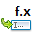
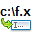

Internal Commands
- Content
- 1. Table of Command Categories
- 2. Description of all commands per category
-
- 2.1. Active Panel
- 2.2. Left Panel
- 2.3. Right Panel
- 2.4. File Operations
- 2.5. Configuration
- 2.6. Network
- 2.7. Miscellaneous
- 2.8. Mark
- 2.9. Clipboard
- 2.10. Navigation
- 2.11. Help
- 2.12. Window
- 2.13. Command Line
- 2.14. Tools
- 2.15. View
- 2.16. Tabs
- 2.17. Logs
| Table of Command Categories | |
|---|---|
| Category | Description |
| These commands apply to the current selected panel, left or right. | |
| These commands apply to the left panel, no matter which one is currently selected. | |
| These commands apply to the right panel, no matter which one is currently selected. | |
| These commands apply to current selected item in current selected panel. It includes operations like view/copy/move/rename/delete/pack/unpack/split etc. These are probably the commands that have a direct impact with your files. |
|
| Access options and configurations of Double Commander. | |
| Related directly with computer network. | |
| Inevitable category with commands we did not in which category to place them! Effort has been made to try to don't place too much commands in this category. |
|
| Select the items on which the file operations will took place. | |
| Actions related to interact between system's clipboard and selected items. | |
| To go from a folder to another to access various items according to where they are. | |
| Access the integrated help files of Double Commander | |
| Commands related with the Double Commander window about its look and behaviour like any other computer's application. | |
| Interact with command line to view past commands and help to invoke new ones. | |
| For action requiring more than a click. These action will generally show another window to have Double Commander do some more complex jobs. | |
| Commands related with the visibility or not of files like the system files, etc. | |
| Interact with tabs by creating new ones, navigate through them, etc. | |
| Actions related with DC logs file. | |
2.1. Active Panel
These commands apply to the current selected panel, left or right.
| Category "Active Panel" | ||||||||||||||||||||||||||||||||||||
|---|---|---|---|---|---|---|---|---|---|---|---|---|---|---|---|---|---|---|---|---|---|---|---|---|---|---|---|---|---|---|---|---|---|---|---|---|
| Name | Description | |||||||||||||||||||||||||||||||||||
| Just the name of the items. If possible, more than one column. |
||||||||||||||||||||||||||||||||||||

|
One item per line, with the default columns settings. See column section in main help file. |
|||||||||||||||||||||||||||||||||||

|
Items shown as thumbnails. If possible, more than one column. |
|||||||||||||||||||||||||||||||||||

|
Will scan all the directories of active panel to show all this content in this one single panel. | |||||||||||||||||||||||||||||||||||

|
Content of selected item shown in opposite panel. As we navigate to next items, displayed content is updated. |
Ctrl+F3 |
Sort items in active panel by name. | |||||||||||||||||||||||||||||||||

Ctrl+F4 |
Sort items in active panel by extension. | |||||||||||||||||||||||||||||||||||

Ctrl+F6 |
Sort items in active panel by size. | |||||||||||||||||||||||||||||||||||
|
Ctrl+F5 |
Sort items in active panel by date. | |||||||||||||||||||||||||||||||||||

| Sort items in active panel by attributes. | |||||||||||||||||||||||||||||||||||
| Invert sorting items in the active panel. | ||||||||||||||||||||||||||||||||||||

| Open drives list for active panel. | |||||||||||||||||||||||||||||||||||
| Will sort specified column in specified order of the specified panel. See the following table for the possible parameter values.
"cm_UniversalSingleDirectSort panel=active column=size order=descending" This will sort the item in active column according to filesize with larger files first. |
||||||||||||||||||||||||||||||||||||

|
Compute overall size of the contents of each of the directories present in current selected panel. | |||||||||||||||||||||||||||||||||||
2.2. Left Panel
These commands apply to the left panel, no matter which one is currently selected.
| Category "Left Panel" | |
|---|---|
| Name | Description |

| In left panel, just the name of the items. If possible, more than one column. |
| In left panel, one item per line, with the default columns settings. See column section in main help file. |
|

| In left panel, items shown as thumbnails. If possible, more than one column. |

| Will scan all the directories of left panel to show all this content in this single panel. |

| Sort items in left panel by name. |

| Sort items in left panel by extension. |

| Sort items in left panel by size. |

| Sort items in left panel by date. |
| Sort items in left panel by attributes. | |

| Invert sorting items in the left panel. |
|
Alt+F1 |
Open drives list for left panel. |
2.3 Right Panel
These commands apply to the right panel, no matter which one is currently selected.
| Category: Right Panel | |
|---|---|
| Name | Description |
| In right panel, just the name of the items. If possible, more than one column. |
|
| In right panel, one item per line, with the default columns settings. See column section in main help file. |
|
| In right panel, items shown as thumbnails. If possible, more than one column. |
|
| Will scan all the directories of right panel to show all this content in this single panel. | |
| Sort items in right panel by name. | |

| Sort items in right panel by extension. |
| Sort items in right panel by size. | |

| Sort items in right panel by date. |
| Sort items in right panel by attributes. | |
| Invert sorting items in the right panel. | |
|
Alt+F2 |
Open drives list for right panel. |
2.4 File Operations
These commands apply to current selected item in current selected panel.
It includes operations like view/copy/move/rename/delete/pack/unpack/split etc.
These are probably the commands that have a direct impact with your files.
| Category "File Operations" | ||||||||||||||||||
|---|---|---|---|---|---|---|---|---|---|---|---|---|---|---|---|---|---|---|
| Name | Description | |||||||||||||||||

F3 |
Open file in viewer program. | |||||||||||||||||

F4 |
Open file in internal editor. | |||||||||||||||||

Shift+F4 |
Create a new file, and open it in the editor (see configuration). | |||||||||||||||||

F5 |
Copy items from source to target.
Example: "cm_Copy confirmation=1" will prompt user to confirm the copy, no matter how file operations confirmation for copy operations setting is set. |
|||||||||||||||||
| Copy items from source to target without asking for confirmation. | ||||||||||||||||||
|
Shift+F5 |
Copy items in the same directory. | |||||||||||||||||
|
F6 |
Rename or move items.
Example: "cm_Rename confirmation=1" will prompt user to confirm the rename/move, no matter how file operations confirmation for move operations setting is set. |
|||||||||||||||||

|
Rename or move items without asking for confirmation. | |||||||||||||||||

Shift+F6, F2 |
Rename files in the same directory. | |||||||||||||||||

F7 |
Create a new directory. | |||||||||||||||||

F8 |
Delete selected item to trash can (recycle bin) or permanently. Deleting to trash can might not be available for all platforms. A different confirmation message is given when deleting to Trash Can or permanently.
|
|||||||||||||||||

Alt+Del |
Wipe file. | |||||||||||||||||
|
Alt+F5 |
Pack items into archive. | |||||||||||||||||
| Validate the integrity of the content of selected archive file. If archive content is corrupted, error message will be reported. |
||||||||||||||||||

Ctrl+PgDown |
Try to open a file as an archive. | |||||||||||||||||
|
Alt+F9 |
Unpack one or more selected archives. | |||||||||||||||||

|
Open according to WFX plugin. | |||||||||||||||||

Alt+Enter |
Show item properties (size, data, attributes, etc). | |||||||||||||||||

|
Adjust item properties like creation, modified and last access date, file permission, etc. | |||||||||||||||||

Ctrl+Z |
Create or edit comment for file/directory | |||||||||||||||||

| Shows context menu for files and folders | |||||||||||||||||

Enter |
Open a file or program under cursor. Associated application based on file association configuration might be used, etc. |
|||||||||||||||||

|
Will invoke computer's associated program to current selected item. A single parameter may also be provided for the call. |
|||||||||||||||||

| Create symlink to file/directory. | |||||||||||||||||
| Create hard link. | ||||||||||||||||||
| Split files dialog. | ||||||||||||||||||
| Combine multiple splitted files together to form one single file. | ||||||||||||||||||

| Calculate file checksum (MD5, SHA1, etc). | |||||||||||||||||

| Verify MD5, SHA1, etc. checksum. | |||||||||||||||||
2.5 Configuration
Access options and configurations of Double Commander.
| Category "Configuration" | ||||||||||||||||||||||||||||||||||||
|---|---|---|---|---|---|---|---|---|---|---|---|---|---|---|---|---|---|---|---|---|---|---|---|---|---|---|---|---|---|---|---|---|---|---|---|---|
| Name | Description | |||||||||||||||||||||||||||||||||||

| Open configuration dialog | |||||||||||||||||||||||||||||||||||

|
Access configuration of the toolbar. | |||||||||||||||||||||||||||||||||||

|
Access configuration of the directory hotlist. It is equivalent to "cm_WorkWithDirectoryHotlist" command with following parameters: action=config source=%Ds |
|||||||||||||||||||||||||||||||||||

|
Access the "Directory Hotlist" configuration window. With the parameters, you may control which actions will be done regarding the hotlist.
"cm_WorkWithDirectoryHotlist action=addboth" This will add to directory hotlist both current directories of active and inactive frame as source and target respectively. |
|||||||||||||||||||||||||||||||||||

| Open file associations configuration | |||||||||||||||||||||||||||||||||||
2.6 Network
Related directly with computer network.
| Category "Network" | |
|---|---|
| Name | Description |

|
Nothing for the moment, but might be used in the future with network related stuff. |
| Nothing for the moment, but might be used in the future with network related stuff. | |
2.7 Miscellaneous
Inevitable category with commands we did not in which category to place them!
Effort has been made to try to don't place too much commands in this category.
| Category "Miscellaneous" | |
|---|---|
| Name | Description |

Ctrl+L |
Calculate occupied space of selected items in active panel. |

F9 |
Starts a terminal. |
2.8 Mark
Select the items on which the file operations will took place.
| Category "Mark" | |
|---|---|
| Name | Description |
| Select items using a mask. | |

| Unselect marked items using a mask. |

Ctrl+A |
Mark all in the panel. |
|
F1 |
Unselect all marked items. |
| Invert selection. | |
| Mark files with the same extension as file under cursor. | |
| Unmark items using mask. | |
| Will select the files, in both active and inactive panels, that are not present in the opposite panel. | |
| Used in conjunction with "cm_RestoreSelection". The "cm_SaveSelection" command will save in internal buffer current selected items. Then later, the command "cm_RestoreSelection" could be use to re-select again the same items that were selected before. |
|

|
See previous "cm_SaveSelection" command. |

|
Save the current selection to a file. You may specify the output filename into the first parameter. If no parameter is supplied, Double Commander will prompt user to enter one. |

|
Will read the content of the supplied file to select items from what is read from the file This file could be supplied as the first parameter of the internal command. If no file is supplied, application will prompt use to enter one. |

|
Will select the item of the active panel based on the content of the clipboard. |
2.9 Clipboard
Actions related to interact between system's clipboard and selected items.
| Category "Clipboard" | |
|---|---|
| Command name | Description |

Ctrl+X |
Cut selected text, file or directory to clipboard. |
|
Ctrl+C |
Copy selected text, file or directory to clipboard. |

Ctrl+V |
Paste data from clipboard. |
|
Ctrl+Alt+X |
Copy item names to clipboard. |
|
Ctrl+Alt+C |
Copy item full names to clipboard. |

|
Will copy the full path of the current selected items including an ending directory separator. |

|
Will copy the full path of the current selected items excluding an ending directory separator. |

|
Will copy in the clipboard the displayed infos of the selected items. |
2.10 Navigation
To go from a folder to another to access various items according to where they are.
| Category "Navigation" | |||||||||||||||||||||||||||||||
|---|---|---|---|---|---|---|---|---|---|---|---|---|---|---|---|---|---|---|---|---|---|---|---|---|---|---|---|---|---|---|---|
| Command name | Description | ||||||||||||||||||||||||||||||
|
Ctrl+H |
Invoke dir history drop down menu. | ||||||||||||||||||||||||||||||

Ctrl+D |
Directory hotlist. | ||||||||||||||||||||||||||||||

|
Go to the parent directory of the current shown one. | ||||||||||||||||||||||||||||||

|
Go to to the user's home directory. | ||||||||||||||||||||||||||||||

| Go to root directory ("/" in GNU/Linux). | ||||||||||||||||||||||||||||||
|
Alt+Z |
Show same directory in opposite panel. | ||||||||||||||||||||||||||||||

Ctrl+Left |
Open directory under cursor in the left panel. | ||||||||||||||||||||||||||||||

Ctrl+Right |
Open directory under cursor in the right panel. | ||||||||||||||||||||||||||||||

Alt+Z |
Show same directory in left panel than what is in the right panel. | ||||||||||||||||||||||||||||||

|
Show same directory in right panel than what is in the left panel. | ||||||||||||||||||||||||||||||
|
Ctrl+U |
Swap file panels. | ||||||||||||||||||||||||||||||
|
Ctrl+S |
Quick search in directory.
|
||||||||||||||||||||||||||||||

Ctrl+F |
It allows to filter the file list to show only desired files/directories.
For example, setting a tool button with the following parameters will allow pressing button to alternate the application of a filter to show only the "txt" file or not each time the button is pressed:
text=txt
filter=toggle files=yes directories=yes matchbeginning=no matchending=yes When no parameter at all is specified, it will be assumed to activate the filter AND the other options will be the same as previous filter except for the text with the focus ready in the text box to allow you to type the desired text to set filter. |
||||||||||||||||||||||||||||||
| User may type directly the directory he wants see in the selected panel. | |||||||||||||||||||||||||||||||

|
Will switch the active/inactive/left/right panel to the specified directory(ies). Please note that you may specify more than one parameters so this way, with one command, you may set both source and target path.
Examples: cm_ChangeDir activepath=%DESKTOP% inactivepath=E:\Medias\Paul Houde This will make the active panel to show content of %DESKTOP% directory and in the inactive panel you'll see the content of "Paul Houde" one. cm_ChangeDir leftpath=C:\Working rightpath=E:\Euler No matter where is the current active panel, the left one will show content of "Working" folder and the right panel will show the one of "Euler". cm_ChangeDir \\TERA-06\OPENSHARE1\MEDIAS\PICTURES\2015 This is the DC legacy way of working, the active panel will switch to show content of the network mentionned path. |
||||||||||||||||||||||||||||||

|
Current selection of the active panel to the first item. | ||||||||||||||||||||||||||||||

|
Current selection of the active panel to the last item. | ||||||||||||||||||||||||||||||

|
Will popup at the cursor position the last directories visited. | ||||||||||||||||||||||||||||||

|
According to list of last directories visited, will set the active panel to the very next one, if any, visited prior the current one. | ||||||||||||||||||||||||||||||

|
According to list of last directories visited, will set the active panel to the very last one visited prior the current one. | ||||||||||||||||||||||||||||||
2.11 Help
Access the integrated help files of Double Commander
| Category "Help" | |
|---|---|
| Name | Description |

| Open Double Commander help index page. |

| Open keyboard shortcuts help page. Note:This will be a passive HTML file. So you if you change the keyboard shortcut from the default one, be aware that the passive html help file won't show the actual shortcut the application is currently using. |

| Go to Double Commander's home page. |

F1 |
Show program "About" information. |
2.12 Window
Commands related with the Double Commander window about its look and behavior like any other computer's application.
| Category "Window" | ||||||||||||
|---|---|---|---|---|---|---|---|---|---|---|---|---|
| Name | Description | |||||||||||

|
Will set the arrangement of panels between two vertical ones disposed in left/right OR two horizontal ones disposed in top/bottom.
Example: "cm_HorizontalFilePanels mode=horizontal" will force the two panels to be in horizontal disposition, one above the other. |
|||||||||||

| Set the panels width, e.g. 50% — equal size
Example: "cm_PanelsSplitterPerPos splitpct=80", with vertical panels, will set the left panel width to 80% of the available space. |
|||||||||||
Determine if we see the main bar menu or not.
Example: "cm_ShowMainMenu menu=off", will hide the main menu. |
||||||||||||
| Ex-command not implemented anymore. | ||||||||||||
| Shows a window with the file operations process currently in progress if any. | ||||||||||||

|
Ex-command not implemented anymore. Since the configuration of the toolbar is done via one single simple versatile dedicated configuration window, you may want to refer to cm_ConfigToolbars command instead. |
|||||||||||

|
Minimize the Double Commander window. | |||||||||||

Alt+X |
Close Double Commander. | |||||||||||
2.13 Command Line
Interact with command line to view past commands and help to invoke new ones.
| Category "Command Line" | |
|---|---|
| Name | Description |

Shift+F2 |
Change focus to the command line. |

Ctrl+7 |
Show history of all commands used in the command line. |
| Will activate in the next command line typed prior the current one, if any. | |

|
Will activate in the next command line typed after the current one, if any. |

Ctrl+P |
Place current path in command line. |
|  | Place filename of current selected item in command line. |
|  | Place current path and filename of selected item in command line. |
2.14 Tools
For action requiring more than a click.
These action will generally show another window to have Double Commander do some more complex jobs.
| Category "Tools" | |
|---|---|
| Name | Description |

Ctrl+M |
Open multi rename tool dialog. |

Alt+F7 |
Open Search dialog. |

|
Will invoke the directory synchronization tool to scan left and right panel folder to eventually see the content difference and make them equal. |

| Open compare by contents dialog |
| Will simply show a message with the info passed as parameters. This may be helpful to validate the parameter you're passing to a command. |
|
| Will show an internal command selector window where user may select any of the possible internal command and execute it. | |
2.15 View
Commands related with the visibility or not of files like the system files, etc.
| Category "View" | ||||||||||||
|---|---|---|---|---|---|---|---|---|---|---|---|---|
| Name | Description | |||||||||||
|
Ctrl+R |
Refresh panels. | |||||||||||

| Show hidden and system files. | |||||||||||
Enable or not the "Ignore list" depending of the parameter.
Example: "cm_SwitchIgnoreList ignorelist=on", ignore list is enabled so item present in the ignore list won't be shown in the panels. |
||||||||||||
2.16 Tabs
Interact with tabs by creating new ones, navigate through them, etc.
| Category "Tabs" | |
|---|---|
| Name | Description |

Ctrl+T |
Create a new tab for opened directory. |
| Open directory at new tab, but don't switch to it | |

Ctrl+Tab |
Change to next tab. |

Shift+Ctrl+Tab |
Change to previous tab. |

|
Prompt user to rename current tab of active panel. |

|
Close current tab of active panel. |
| Close all tabs of active panels, except the current one and the locked ones. | |

|
Prompt the user to open a file expected to contains tab names to add and their associated directories. |

|
Will save into a file the current tab names and thei associated directories. |

|
Current tab status to normal. |

|
Current tab to "locked", user can't change directory. |
| Current tab to "locked with dir change allowed", user may change directory inside the panel, but if user changes tab and then come back to that one, it will come back to original directory where it was "locked with dir changed allowed". | |
| Current tab to @locked with dir change in new tab", user may change directory inside the panel, but as user enters in new directory, that one will be opened in a new tab. | |
2.17 Logs
Actions related with DC logs file.
| Category "Logs" | |
|---|---|
| Name | Description |

|
Open the current log file of operation. |

|
Will erase the current log file of operation. |

|
Will clear the log window content. |